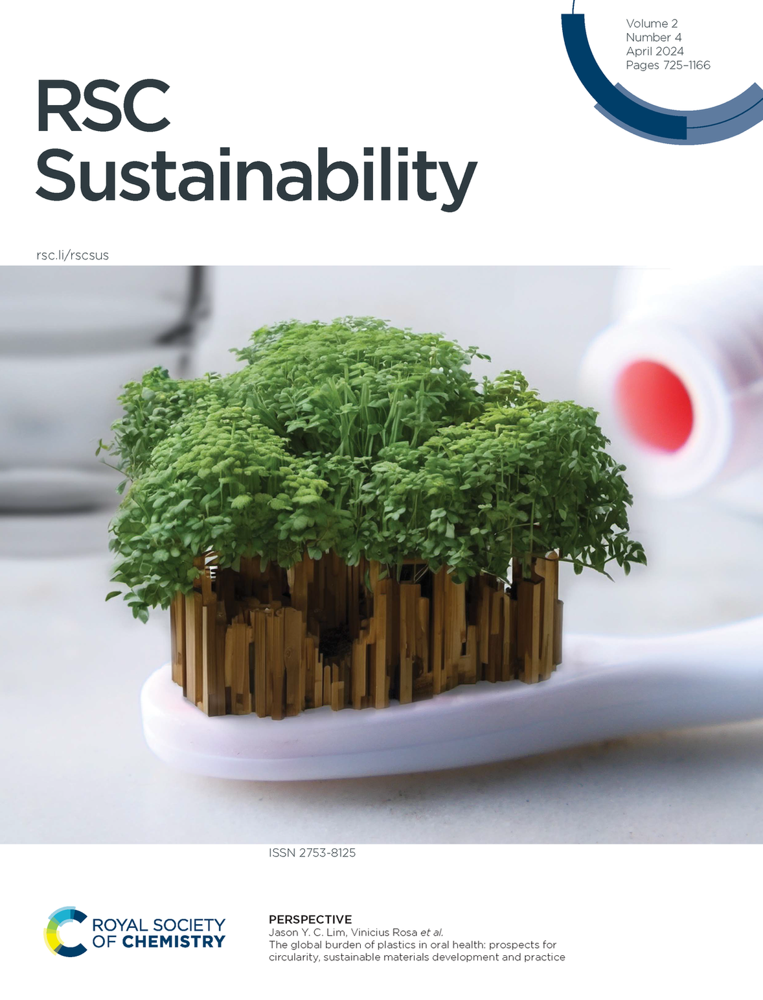

A/P Rosa explains the science behind toothpaste
In a media feature, A/P Rosa breaks down the chemistry and evidence base of modern dental care products — from fluoride mechanisms to antimicrobial agents.

Toothpaste sits at the intersection of chemistry, biology, and public health — yet its contents and their mechanisms of action remain poorly understood by most consumers. In a media feature, A/P Rosa offered a scientist’s perspective on what toothpastes actually do, why certain ingredients matter, and how the evidence base behind dental care formulations has evolved. The discussion covered fluoride’s central role in remineralisation, the function of abrasive systems in plaque and stain control, and the science behind agents such as stannous fluoride and zinc.
A/P Rosa situates this expertise in the context of his broader research on dental biomaterials and biocompatibility. Evaluating how dental formulations interact with hard and soft oral tissues is integral to his scientific programme, making him well placed to assess both the therapeutic effectiveness and the safety profile of dental care ingredients. His comments addressed how laboratory evidence translates — and sometimes fails to translate — into real-world clinical benefit.
The tube on your bathroom shelf is the result of decades of materials and biological science.
Media engagement of this kind connects cutting-edge research to the everyday decisions of millions of people. A/P Rosa has engaged with multiple media outlets over the years, communicating the science of oral health and dental materials to audiences in Singapore and internationally. Public literacy in oral health is itself a research priority, and this kind of outreach reflects NUS Dentistry’s commitment to impact beyond the laboratory.